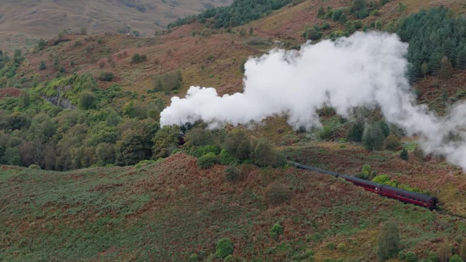
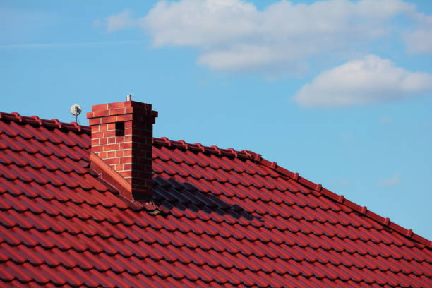
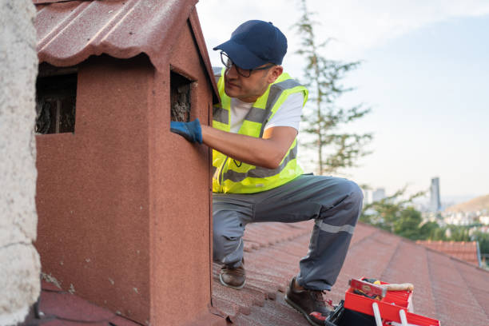
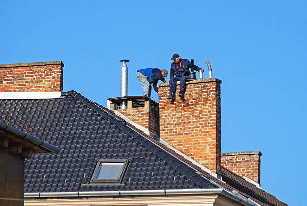

USA - Nationwide
info@chimneyandsweeping.pro
USA - Nationwide
info@chimneyandsweeping.pro

Our chimney cleaning services for homes provide an affordable solution to maintain a clean and safe chimney system.
Our chimney cleaning services for homes ensure a safe, efficient system. Breathe easier with our expert services—contact us to book your appointment now! Usa - Nationwide
Residential & commercial Chimney Sweeping
Quality services at affordable prices
Immediate 24/ 7 emergency services


When it comes to maintaining the safety and efficiency of your fireplace, the importance of professional chimney sweeping cannot be overstated. residents often search for “chimney sweeping services near me” to ensure that they are choosing a locally trusted service provider. Our experienced team is dedicated to providing top-notch chimney sweeping services that ensure your chimney is free from soot, blockages, and potential fire hazards. With our state-of-the-art equipment and certified professionals, we cater to both residential and commercial clients, ensuring that you have peace of mind every time you light a fire. We prioritize your safety and comfort by adhering to all safety protocols and industry best practices.

If you’re looking for affordable chimney sweeping services in Usa - Nationwide, you've come to the right place! Our mission is to provide top-notch chimney cleaning without breaking the bank. We understand that homeowners often have budgeting constraints, which is why we've made it our priority to offer competitive pricing on all our services. Our experienced chimney sweeps not only save you money up front but also help prevent costly repairs down the line by ensuring that your chimney is free of soot and blockages. With flexible scheduling options, our team is ready to work with you to ensure your fireplace and chimney systems are clean and safe, providing peace of mind and assurance. Discover why we are the top choice for affordable chimney sweeping in your area!

At our company, we recognize the importance of thorough chimney inspections in conjunction with cleaning. Our team offers comprehensive chimney inspection and cleaning services that go beyond mere surface-level work. We perform a meticulous examination of your entire chimney system, checking for signs of wear, blockages, and structural issues, followed by a deep cleaning to eliminate creosote, soot, and debris buildup. With our trained and certified staff, you receive detailed reports on the condition of your chimney, ensuring that any underlying issues are identified and addressed. Prevent vertical fires and ensure the safety of your home with our unparalleled chimney inspection and cleaning services!

When it comes to identifying the best chimney sweeping companies we stand unrivaled. Our commitment to excellence, paired with our extensive experience in the industry, allows us to provide comprehensive services that meet the highest standards of safety and customer satisfaction. Our certified chimney sweeps bring a combination of skill, advanced tools, and an eye for detail, ensuring no stone is left unturned during our chimney cleaning processes. We invite you to read our stellar customer reviews and testimonials that speak volumes about our effectiveness and reliability. Choosing us means choosing safety, professionalism, and a dedication to ensuring your chimney operates efficiently for years to come.

When you need professional chimney sweep services, our certified team stands ready to serve in Usa - Nationwide. We understand that your chimney is a vital part of your home's overall health and safety. Our trained technicians follow stringent safety protocols and are equipped with cutting-edge technology to provide deep cleaning that removes hazardous substances effectively. With us, you don't just get a service; you receive reliability, integrity, and quality you can count on.

When it comes to the safety of your home, nothing is more important than using professional services for chimney sweeping and maintenance. At Chimney Sweeping, our professional chimney sweep services in Usa - Nationwide guarantee that your fireplace and chimney system is clean, safe, and prepared for usage year-round.
Our team of highly qualified professionals is dedicated to ensuring that your chimney is operating efficiently while minimizing fire hazards. We understand that a dirty chimney can lead to dangerous situations; that’s why we employ advanced cleaning methods and techniques to efficiently remove soot and blockages, restoring your chimney's performance.
Beyond cleaning, we offer a comprehensive evaluation of your chimney’s overall health. Our team will advise you on necessary repairs, preventative measures, and routine maintenance, giving you peace of mind as you enjoy a cozy fire in your home. The safety of your family is our priority, which is why we focus on delivering high-quality, thorough cleaning services that comply with all local regulations and standards. Choose Chimney Sweeping for professional chimney sweep services in Usa - Nationwide, where safety meets excellence.

Finding chimney cleaning services near you has never been easier. Our company provides comprehensive chimney cleaning services right in your neighborhood of Usa - Nationwide. Our technicians are trained to handle various kinds of chimneys, ensuring every inch is properly serviced. We focus on removing blockages, improving your chimney's efficiency, and promoting safe function all year round. When you choose us, you’re not just getting a service; you’re investing in your safety and comfort.

In today's world, ensuring your home is safe and comfortable is more crucial than ever. Our residential chimney sweeping services are tailored to meet the specific needs of homeowners. Regular chimney cleaning is vital to preventing fires and ensuring that your heating system operates efficiently. We utilize specialized brushes and equipment to reach every angle of your chimney, thoroughly removing creosote and blockages that can restrict airflow and create dangerous situations. Our team provides detailed inspections along with our cleaning services, so you can understand your chimney’s condition and address any potential issues proactively. Choosing our residential chimney sweeping services means prioritizing the safety of your family and home.

In the heart of any thriving business lies a commitment to safety and excellence. Our commercial chimney sweeping services in Usa - Nationwide cater to restaurants, hotels, and all other businesses that require chimney maintenance. Keeping your commercial chimney clear of debris and obstructions is essential for compliance with local safety regulations and for protecting your investment. Our professional team is equipped to tackle large-scale chimney problems, ensuring that your business runs smoothly with minimal interruption. We pride ourselves on service that meets the unique needs of your business.

Regular chimney inspections and cleanings are key to ensuring your fireplace operates safely and efficiently. At Chimney Sweeping, we provide comprehensive chimney inspection and cleaning services that go beyond traditional sweeping. Our experienced professionals understand the critical components that impact your chimney's performance and safety.
Our in-depth chimney inspections assess not only the cleanliness of the flue but also the structural integrity of the chimney itself. Using advanced tools like video cameras, our team can identify cracks, blockages, and other issues that may exacerbate fires or make you susceptible to dangerous carbon monoxide leaks.
Following our inspection, we provide a detailed report along with recommendations for any necessary repairs or services. Our cleaning method goes hand-in-hand with our inspection process, ensuring that all creosote, soot, and debris are thoroughly removed. Trust our certified chimney sweeps to help maintain your fireplace’s health; we are committed to offering transparent pricing, prompt scheduling, and exceptional customer service. When you choose Chimney Sweeping for your chimney inspection and cleaning you’re ensured a safe and enjoyable experience by the fireplace!

When considering chimney sweeping services, understanding the cost is vital. Our goal is to provide clear and detailed cost estimates for chimney sweeping . We offer competitive pricing and various service packages to suit your needs. Factors influencing cost may include the size and type of chimney, the level of cleaning required, and any additional repairs needed. Before starting any work, we ensure you have a complete understanding of the costs involved, allowing you to make informed decisions.

Proactive chimney maintenance is the best way to ensure a safe and effective fireplace for years to come. At Chimney Sweeping, we provide expert chimney maintenance services in Usa - Nationwide aimed at preventing costly repairs and ensuring your chimney operates efficiently throughout its lifespan. Regular maintenance is essential in identifying and addressing potential issues before they escalate, and our trained professionals are here to help.
Our comprehensive maintenance services include thorough inspections, routine cleaning, and minor repairs as needed. We take the time to examine every aspect of your chimney system, ensuring that it functions optimally and complies with safety codes. Our technicians are not just cleaners; they are highly-trained professionals who understand the intricacies of chimney systems and what it takes to keep them in top shape.
We also offer personalized maintenance plans tailored to your specific needs and usage patterns. These plans include regular check-ups, reminders for cleaning, and expert advice on maintaining your chimney in between visits. Choosing Chimney Sweeping for your chimney maintenance services ensures that you have a dedicated partner in keeping your fireplace safe and efficient. Reach out today to learn more and schedule your first visit!

Your chimney liner is crucial in ensuring the safe venting of gases. Our chimney liner cleaning services are designed to keep your chimney system running at optimal function. With specialized tools and techniques, we remove soot and debris, ensuring that your chimney liner remains in excellent condition. Investing in our service means investing in safety and efficiency!

Blockages in your chimney can lead to serious safety hazards, including chimney fires and hazardous smoke inhalation. Our chimney blockage removal service in Usa - Nationwide is specialized and efficient. We pinpoint and clear obstructions quickly and effectively, restoring proper ventilation. Trust our experienced team to handle any blockage issues before they become dangerous.

Wood stoves require regular maintenance to ensure safe operation. Our chimney sweep services specifically tailored for wood stoves not only clean but also inspect for safety. We help ensure that your heating system is efficient and compliant with all applicable safety regulations, giving you warmth and peace of mind as the seasons change.

Accumulated soot and debris can significantly hinder the functioning of your chimney and pose severe fire hazards. At Chimney Sweeping, we offer specialized chimney soot and debris removal services aimed at restoring the efficiency and safety of your fireplace. Our experienced team is dedicated to delivering thorough cleaning that addresses all of the harmful build-up in your chimney system.
Soot and debris can result from various factors, including the type of fuel used and the frequency of usage. Our technicians are trained to identify the signs of excessive soot build-up and act swiftly to rectify the situation. Using advanced cleaning methods and tools, we guarantee a complete removal of all soot, ensuring your chimney’s safe operation.
In addition to the cleaning process itself, we provide our clients with valuable insights on ongoing chimney maintenance to prevent future build-up. Regular cleaning is an investment in your chimney system's lifespan and performance, and our team is here to ensure you get the best out of your fireplace or wood stove. Choose Chimney Sweeping for professional chimney soot and debris removal — ensuring your home is safe, warm, and efficient.

Supporting local businesses while ensuring your home's safety is important. Our local chimney cleaning company in Usa - Nationwide has built a solid reputation for delivering exceptional service and customer satisfaction. We understand the community's unique needs and provide tailored solutions that adhere to local regulations and safety standards. Our friendly, professional staff is dedicated to helping you navigate your chimney maintenance needs, from inspections to cleanings. Trust in our local company to treat you like family while keeping your chimney in top condition!

Keeping your chimney in excellent condition demands regular attention. Our annual chimney sweeping services are essential preventive measures designed to catch problems before they escalate. We recommend an annual cleaning to maintain optimal performance and safety. Our team is dedicated to ensuring that your chimney operates safely and efficiently for years to come.
alooma18id

The smoke chamber is often one of the most overlooked areas in chimney maintenance. Our chimney smoke chamber cleaning services are designed to clear away creosote and obstructions that can cause smoke to back up into your home. Our specialized crews understand the intricacies of smoke chamber design and utilize advanced cleaning techniques to ensure a thorough job. By addressing this critical area of your chimney system, we enhance draft efficiency and reduce fire hazards. Invest in your home’s safety with our targeted chimney smoke chamber cleaning services!

A thorough and professional chimney inspection can help identify potential hazards before they become serious problems. Our professional chimney inspections are conducted by certified specialists who will assess your chimney's condition and recommend necessary services. With a focus on safety and efficiency, we deliver detailed reports and performance evaluations. Whether you’re a homeowner or a business operator, our inspection ensures your system is safe and ready for use.

Emergencies can arise at any time, and your chimney's safety should never be compromised. Our emergency chimney sweeping services are available 24/7 to address any urgent needs you may have. If you experience a chimney blockage or suspect a buildup of creosote, call us right away! Our rapid response teams are equipped to identify and resolve issues promptly to ensure your home remains safe. Don’t suffer through a chimney crisis alone—let our trained professionals provide the immediate assistance you need.

The fireplace is often the heart of home warmth and comfort, but safety must be a priority. Our fireplace safety inspections are comprehensive evaluations that focus on the safe operation of your fireplace and chimney systems. Our technicians will inspect for any damage, blockages, or issues that could lead to hazardous situations. These inspections are essential not only for peace of mind but also for ensuring compliance with local regulations. Prioritize safety and enjoy your fireplace season with confidence by scheduling your fireplace safety inspection with us today!

Businesses that utilize fireplaces or wood stoves must prioritize safety. Our chimney sweep for businesses service is tailored to commercial properties, ensuring compliance with local fire codes and regulations. We provide thorough cleaning and inspections that protect your employees and customers while increasing the efficiency of your heating systems.
alooma24id

Soot and debris can pose significant hazards in your chimney. Our chimney soot and debris removal services are designed for comprehensive clean-up. Our trained professionals tackle all types of soot build-up, ensuring that your chimney is clear and functional. By choosing us, you're protecting your home from fire hazards while enhancing the performance of your heating system.
USA - Nationwide Chimney Sweeping Pros
(877) 848-1711
info@chimneyandsweeping.pro
09.00 AM - 09.00 PM
09.00 AM - 12.00 PM